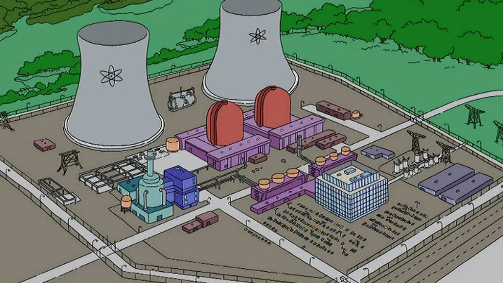
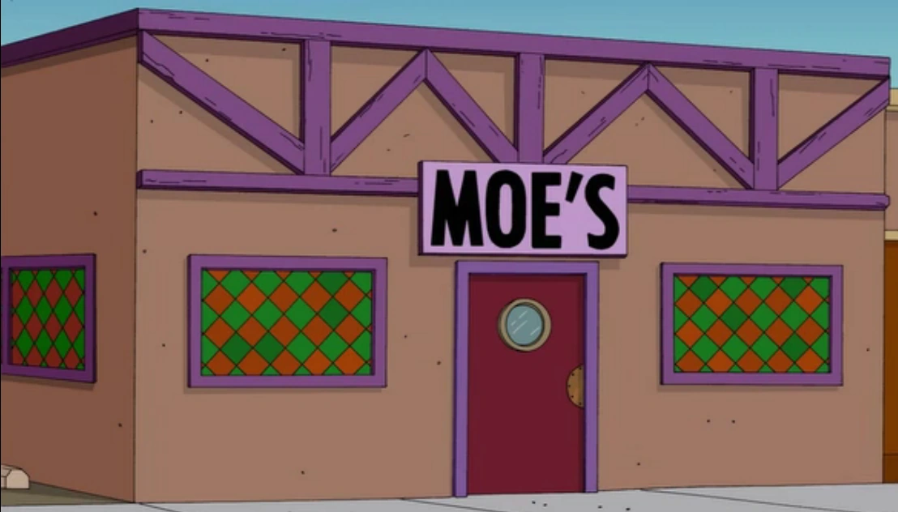
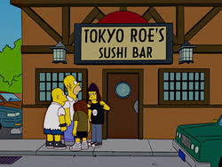
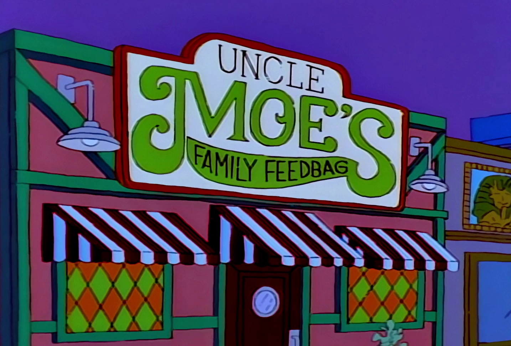
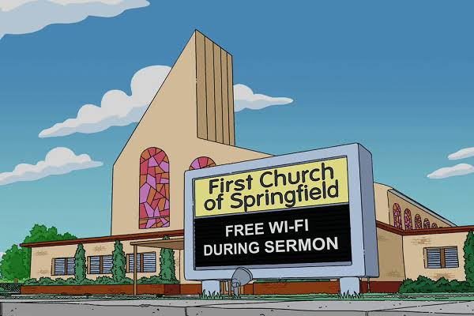
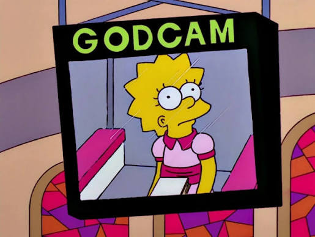

Lugares de interes
Central nuclear
La famosa central nuclear de Springfield, ubicada al oeste de la ciudad, construída y fundada a mediadios del siglo XX.
Es el lugar dónde se genera toda la energía eléctrica de la ciudad.
Puede visitar este enigmático lugar para conocer cómo es que se trabaja acá, conocer a sus empleados y el por qué se generan los fenómenos como
las lluvias ácidas y peligros nucleares constantes que azotan a la ciudad.

Dato curioso: Dentro de la planta se pueden observar animales curiosos, como ratas luminiscentes y peces de 3 ojos
Taberna de Moe
Puede pasar por la taberna a tomar una cerveza, o el famoso trago "Llamarada Moe" junto a sus amigos de jueves a martes. Ubicada cerca del centro de la ciudad, al lado de la Primera Igleseia de Springfield.

Dato curioso: A pesar de haber iniciado como una taberna, como es también a día de hoy, el lugar fue cambiando de rubro múltiples veces, como por ejemplo un restaurante de sushi, o un restaurante familiar


Primera Iglesia de Springfield
Puede escuchar la palabra del Señor todos los domingos como la mayoría de ciudadanos en este lugar. Ubicada cerca del centro, es dirigida por el Reverendo Alegría.

Dato curioso: La iglesia estuvo 2 veces bajo el control del dueño de la planta nuclear de Springfield, Charles Montgomery Burns. La primera debido a que 2 ciudadanos (Homero y Bart Simpson) destruyeron la iglesia y el señor Burns se ofreció a repararla, debido a que el consejo de la iglesia no podía. La segunda también fue debido a falta de dinero y el señor Burns patrocinó la iglesia.
Acá se puede ver una "godcam" agregada luego de una de estas situaciones.
